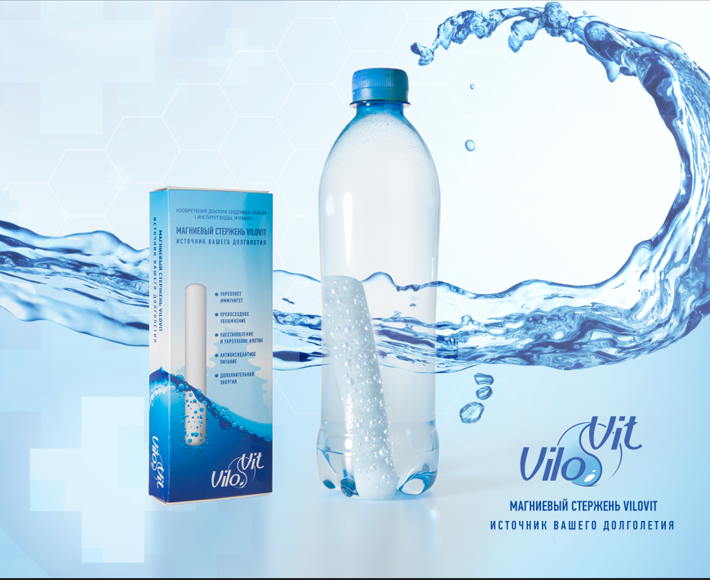

- главная
- что это?
+ 7 (495) 64-111-63
info@vilovit.ru
Стержень Виловит® Источник Вашего Долголетия!
Магниевый стержень «ВилоВит» для живой воды
Торговое название: ВИЛОВИТ
(«ViloVit» в переводе с латинского языка «Via ad longum Vitam» означает «Путь к долгой жизни»)
Форма изделия: Стержень, представляет собой пористую трубку из пищевого полипропилена.
Состав изделия: Пищевой полипропилен - 8,7988 г; магний в виде гранул - 6,6221 г (металл, степень очистки 99,9%); гранулы из древесной смолы - 4,7025 г.
Производитель: Изделие изобретено и производится в японском исследовательском институте воды.
Предназначение изделия: Обогащение питьевой воды активным водородом, который является природным антиоксидантом, в домашних условиях.
Принцип работы: Магний при химической реакции с водой образует молекулярный водород и гидроксид магния, который так же абсолютно безвреден для человека.
Всего за 1 час ВилоВит подарит вам «живую», насыщенную водородом (антиоксидантом), щелочную воду. А при полном насыщении (через 8-10 часов) вы получите воду с показателями Рн 7,5…9 и ОВП -50мВ…-250мВ. Такая вода способствует восстановлению и укреплению организма, а мертвая вода (насыщенная кислородом) медленно отравляет нас изнутри.
Японскому профессору Хаяси из института воды удалось найти способ объединить два необходимых элемента для жизни человека – Воду и Антиоксиданты.
Воздействие на организм
Водород – это необходимый элемент, находящийся в организме человека, и входящий в состав биологических соединений. Он участвует во многих жизненно важных процессах. Потребление водородной воды действенно помогает:
- Снять окислительный стресс, который обычно вызывается свободными радикалами.
- Оптимизировать клеточную воду, утраченную вследствие уже немолодого возраста.
- Стабилизировать пищеварение.
- Нормализовать процесс обмена веществ.
- Вывести токсины из организма и многое другое.
Противопоказания: При нарушении кровообращения и выделительной функции почек, необходима консультация с врачом для определения оптимального количества потребления воды в сутки.
В остальных случаях, водородная вода не имеет противопоказаний, ее могут употреблять пожилые люди, беременные женщины и дети. Водород абсолютно безвреден и не имеет ограничения по объему потребления.